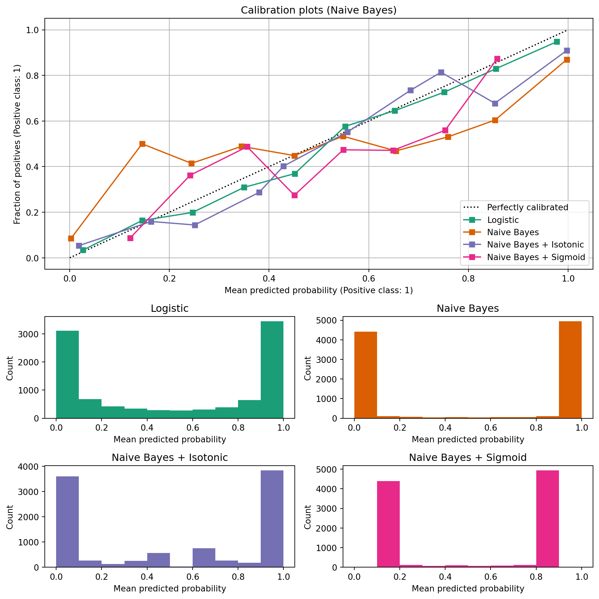
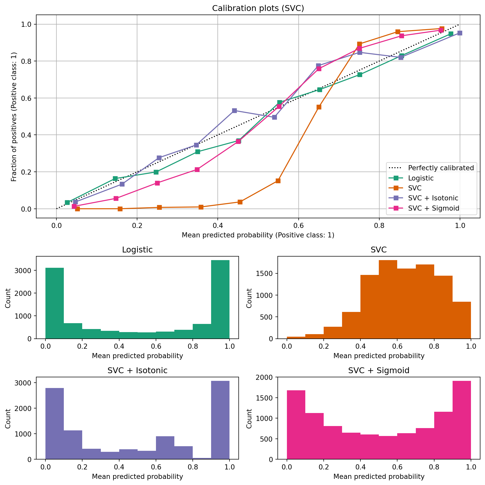

from sklearn.datasets import make_classification
from sklearn.model_selection import train_test_split
from sklearn.linear_model import LogisticRegression
from sklearn.naive_bayes import GaussianNB
from sklearn.calibration import CalibratedClassifierCV
import numpy as np
from sklearn.svm import LinearSVC
X, y = make_classification(
n_samples=10_000, n_features=20, n_informative=2, n_redundant=10, random_state=42
)
X_train, X_test, y_train, y_test = train_test_split(
X, y, test_size=0.99, random_state=42
)
lr = LogisticRegression(C=1.0)
gnb = GaussianNB()
gnb_isotonic = CalibratedClassifierCV(gnb, cv=2, method="isotonic")
gnb_sigmoid = CalibratedClassifierCV(gnb, cv=2, method="sigmoid")
lr.fit(X_train, y_train)
gnb.fit(X_train, y_train)
gnb_isotonic.fit(X_train, y_train)
gnb_sigmoid.fit(X_train, y_train)
y_proba_lr = lr.predict_proba(X_test)[:, 1]
y_proba_gnb = gnb.predict_proba(X_test)[:, 1]
y_proba_gnb_isotonic = gnb_isotonic.predict_proba(X_test)[:, 1]
y_proba_gnb_sigmoid = gnb_sigmoid.predict_proba(X_test)[:, 1]
class NaivelyCalibratedLinearSVC(LinearSVC):
"""LinearSVC with `predict_proba` method that naively scales
`decision_function` output for binary classification."""
def fit(self, X, y):
super().fit(X, y)
df = self.decision_function(X)
self.df_min_ = df.min()
self.df_max_ = df.max()
def predict_proba(self, X):
"""Min-max scale output of `decision_function` to [0, 1]."""
df = self.decision_function(X)
calibrated_df = (df - self.df_min_) / (self.df_max_ - self.df_min_)
proba_pos_class = np.clip(calibrated_df, 0, 1)
proba_neg_class = 1 - proba_pos_class
proba = np.c_[proba_neg_class, proba_pos_class]
return proba
svc = NaivelyCalibratedLinearSVC(max_iter=10_000)
svc_isotonic = CalibratedClassifierCV(svc, cv=2, method="isotonic")
svc_sigmoid = CalibratedClassifierCV(svc, cv=2, method="sigmoid")
svc.fit(X_train, y_train)
svc_isotonic.fit(X_train, y_train)
svc_sigmoid.fit(X_train, y_train)
y_proba_svc = svc.predict_proba(X_test)[:, 1]
y_proba_svc_isotonic = svc_isotonic.predict_proba(X_test)[:, 1]
y_proba_svc_sigmoid = svc_sigmoid.predict_proba(X_test)[:, 1]Calibration Curve
calibration
scikit-learn
An example of creating a calibration curve using rtichoke and scikit-learn.
The following example is inspired by the scikit-learn documentation displaying a calibration curve.
Load data and fit models
Gaussian Naive Bayes
import plotly.io as pio
pio.renderers.default = "plotly_mimetype+notebook_connected"
from rtichoke import create_calibration_curve
create_calibration_curve(
probs={
"Logistic": y_proba_lr,
"Naive Bayes": y_proba_gnb,
"Naive Bayes + Isotonic": y_proba_gnb_isotonic,
"Naive Bayes + Sigmoid": y_proba_gnb_sigmoid,
},
reals=y_test
)import matplotlib.pyplot as plt
from matplotlib.gridspec import GridSpec
from sklearn.calibration import CalibrationDisplay
clf_list = [
(lr, "Logistic"),
(gnb, "Naive Bayes"),
(gnb_isotonic, "Naive Bayes + Isotonic"),
(gnb_sigmoid, "Naive Bayes + Sigmoid"),
]
fig = plt.figure(figsize=(10, 10))
gs = GridSpec(4, 2)
colors = plt.get_cmap("Dark2")
ax_calibration_curve = fig.add_subplot(gs[:2, :2])
calibration_displays = {}
for i, (clf, name) in enumerate(clf_list):
display = CalibrationDisplay.from_estimator(
clf,
X_test,
y_test,
n_bins=10,
name=name,
ax=ax_calibration_curve,
color=colors(i),
)
calibration_displays[name] = display
ax_calibration_curve.grid()
ax_calibration_curve.set_title("Calibration plots (Naive Bayes)")
# Add histogram
grid_positions = [(2, 0), (2, 1), (3, 0), (3, 1)]
for i, (_, name) in enumerate(clf_list):
row, col = grid_positions[i]
ax = fig.add_subplot(gs[row, col])
ax.hist(
calibration_displays[name].y_prob,
range=(0, 1),
bins=10,
label=name,
color=colors(i),
)
ax.set(title=name, xlabel="Mean predicted probability", ylabel="Count")
plt.tight_layout()
plt.show()
Linear SVC
create_calibration_curve(
probs={
"Logistic": y_proba_lr,
"SVC": y_proba_svc,
"SVC + Isotonic": y_proba_svc_isotonic,
"SVC + Sigmoid": y_proba_svc_sigmoid,
},
reals=y_test
)clf_list = [
(lr, "Logistic"),
(svc, "SVC"),
(svc_isotonic, "SVC + Isotonic"),
(svc_sigmoid, "SVC + Sigmoid"),
]
fig = plt.figure(figsize=(10, 10))
gs = GridSpec(4, 2)
ax_calibration_curve = fig.add_subplot(gs[:2, :2])
calibration_displays = {}
for i, (clf, name) in enumerate(clf_list):
display = CalibrationDisplay.from_estimator(
clf,
X_test,
y_test,
n_bins=10,
name=name,
ax=ax_calibration_curve,
color=colors(i),
)
calibration_displays[name] = display
ax_calibration_curve.grid()
ax_calibration_curve.set_title("Calibration plots (SVC)")
# Add histogram
grid_positions = [(2, 0), (2, 1), (3, 0), (3, 1)]
for i, (_, name) in enumerate(clf_list):
row, col = grid_positions[i]
ax = fig.add_subplot(gs[row, col])
ax.hist(
calibration_displays[name].y_prob,
range=(0, 1),
bins=10,
label=name,
color=colors(i),
)
ax.set(title=name, xlabel="Mean predicted probability", ylabel="Count")
plt.tight_layout()
plt.show()